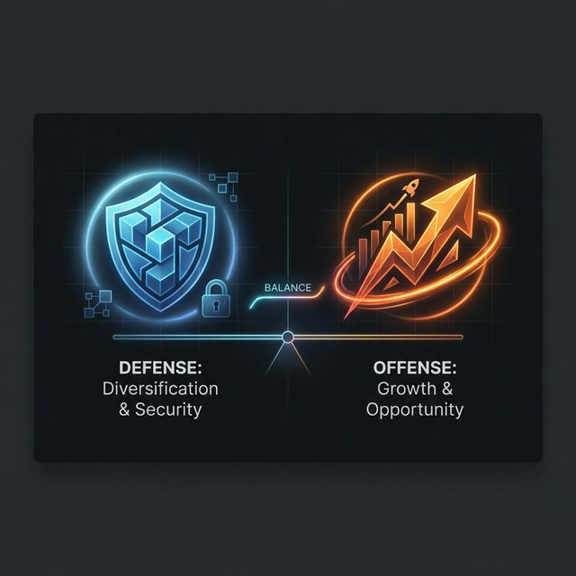

Diversification is defense. Aggression is offense. What’s your current ratio?
A balanced mix can reduce volatility while still delivering respectable returns.

Finding the right balance for your portfolio.
Picture this: you’re standing on a cliff overlooking a sea of opportunities and risks, the wind of market volatility swirling around you. You’re holding a portfolio that could either soar or sink. The key question is how much of that portfolio you want to let go of the safety net and chase the promise of higher returns. 📈 The modern investment world often points to a classic 60% stocks and 40% bonds ratio as a sweet spot, but the truth is that every cliff is different, and so is every investor. In this post, we’ll explore why that 60/40 mix has become a benchmark, how it can shift based on your unique circumstances, and why the ultimate decision should come from a conversation with a trusted financial advisor. 💬
The 60/40 rule is rooted in decades of empirical research that shows a balanced mix of growth‑oriented stocks and income‑generating bonds can reduce volatility while still delivering respectable returns. 📊 Historically, a portfolio with 60% equity and 40% fixed income has outperformed pure equity over long horizons, yet it tends to cushion the blow during market downturns. The logic is simple: equities offer upside potential but come with higher risk, whereas bonds provide stability and a predictable stream of income. By blending the two, investors can capture the best of both worlds. But the magic number is not a one‑size‑fits‑all prescription; it is a starting point that must be calibrated to each investor’s life stage, financial goals, and appetite for risk. 🚀
Your personal risk tolerance is the compass that points you toward the right mix. A young professional with a high tolerance for market swings might lean toward 70% or even 80% stocks, aiming for aggressive growth that can be rebalanced over time. Conversely, someone approaching retirement who prioritizes capital preservation might shift to 40% or 30% stocks, relying more on bonds to generate steady income and protect against market erosion. Age is only one factor; other elements such as debt levels, income stability, and future liquidity needs also play crucial roles. For instance, a homeowner with a mortgage and a stable salary may feel comfortable with a slightly higher equity allocation, while a freelancer with irregular cash flow might prefer a more conservative stance. 📉 Understanding these nuances helps you avoid the trap of sticking to a rigid rule that no longer fits your reality.
Customizing your diversification is not just a theoretical exercise—it’s a practical roadmap to financial resilience. Start by mapping out your short‑term obligations, long‑term dreams, and the timeline you have to achieve them. Then, evaluate how much volatility you can stomach without jeopardizing your peace of mind. Armed with this self‑assessment, schedule a meeting with a qualified financial advisor who can translate your personal story into a concrete asset allocation plan. They can help you fine‑tune the 60/40 baseline, incorporate alternative investments, and set up a dynamic rebalancing schedule that keeps your portfolio aligned with your evolving goals. Remember, the market is a living organism that changes with economic cycles, interest rates, and geopolitical events. A proactive, personalized strategy will give you the flexibility to adapt while staying on track. 🌱
What would your ideal diversification look like if you had to choose right now? 🤔